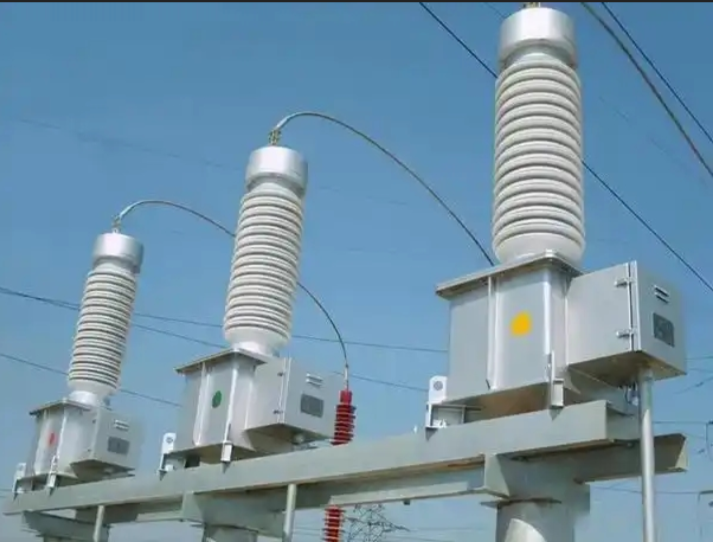
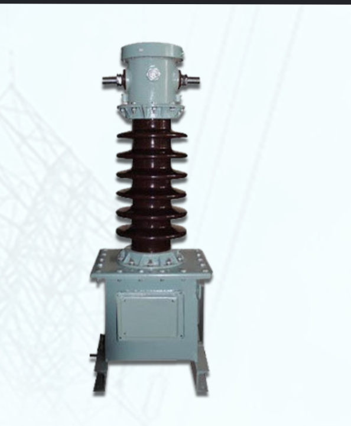

-
Instrument Transformers
2026-07-08
In power systems, currents and voltages are extremely high. Therefore, direct measurement with conventional instruments is not feasible without compromising operator safety. Instead, we use instrument transformers to step down these high voltages and currents for measurement and protection.
Instrument transformers are high-accuracy electrical devices used to isolate or transform voltage and current levels. There are two main types:
1. Voltage or potential transformers (PTs) are specially wound transformers with a high-voltage primary and a low-voltage secondary. They provide a scaled-down sample of the power system voltage for monitoring and protection.
2. Current transformers (CTs) are current-measuring devices used to safely produce a low-level current that accurately represents a much higher current for monitoring and protection. CT ratings are specified as the ratio of primary to secondary current, e.g., 600:5, 800:5, or 1000:5. The secondary ratings for PTs and CTs are typically standardized at 110 V and 5 A, respectively.
It is crucial to keep a current transformer short-circuited at all times, since dangerously high voltages can appear across its secondary terminals if they are left open. In fact, most protective relays have a shorting interlock that must be engaged before the relay can be removed for inspection or adjustment. Without this interlock, dangerously high voltages will appear at the secondary terminals.
Burden of an instrument transformer:
The term burden refers to the impedance of the secondary circuit. It is usually expressed as the apparent power absorbed by the secondary circuit at a specified power factor and at the rated secondary current (or voltage) IEC 60050.
Just like other transformers, a CT has a load on its secondary, and this load is called the burden. Why is it called a burden? As we saw earlier, the secondary of a CT must never be open-circuited because this will cause dangerously high voltages. Therefore, it is necessary to continuously load the CT secondary, and this load ultimately acts as a burden on the CT—which is precisely why the load is referred to as a burden.
References
- Electric Machinery Fundmentals by Stephen J. Chapman
- VA Burden of CT - Electric Indian Magazine
- Wikipedia